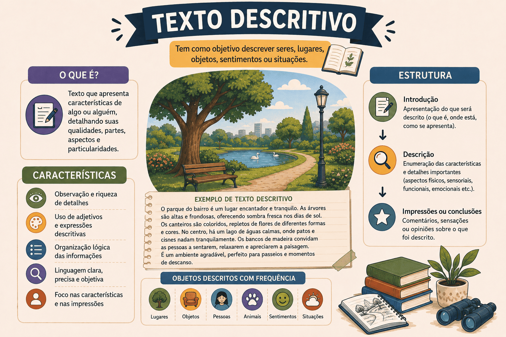

Texto Descritivo: O que é, Características, Tipos e Exemplos
Imagine que você perdeu um objeto valioso e precisa explicar a alguém como ele era, ou que você viajou para um lugar incrível e quer transmitir a um amigo exatamente a sensação visual daquele cenário. Em ambos os casos, você recorrerá ao texto descritivo.
O texto descritivo tem a função de criar uma "fotografia mental" na cabeça do leitor. Ele pausa o tempo da narrativa para detalhar cenários, objetos, personagens ou sentimentos. Nas provas do ENEM e vestibulares literários, a habilidade de identificar as minúcias da descrição é muito cobrada, especialmente associada a movimentos literários como o Realismo e o Naturalismo.
Embora seja difícil encontrar um texto que seja 100% descritivo do início ao fim (geralmente a descrição aparece "infiltrada" em crônicas, romances ou notícias), compreender as engrenagens dessa tipologia é vital para a interpretação de textos complexos.
Neste conteúdo, você vai aprender o que é o texto descritivo, suas principais marcas linguísticas (como o abuso de adjetivos), a diferença entre a descrição objetiva e subjetiva, e como esse tipo textual é cobrado nas provas.

O que é o texto descritivo?
O texto descritivo é uma tipologia textual que se dedica a relatar detalhadamente as características de algo: uma pessoa, um lugar, um objeto, um animal ou até mesmo um estado de espírito. O objetivo é permitir que o leitor construa, em sua própria mente, a imagem exata daquilo que o autor está vendo ou imaginando.
Texto Descritivo é aquele que enumera propriedades, qualidades e detalhes físicos ou psicológicos, funcionando como um "retrato verbal" estático, onde as ações são paralisadas para dar lugar à observação detalhada.
Quais são as principais características da descrição?
Diferente da narração (onde o foco é a ação e a passagem do tempo), a descrição tem como foco o "estado" das coisas. Veja as principais marcas:
Marcas linguísticas e estruturais
- Predomínio de Substantivos e Adjetivos: Como a intenção é caracterizar, usa-se muito a dupla substantivo + adjetivo (ex: "casa velha", "rosto pálido e cansado").
- Uso de Verbos de Estado/Ligação: Como o foco não é a ação, os verbos mais comuns são ser, estar, parecer, permanecer e ficar (ex: "Ela parecia triste"; "O céu estava nublado").
- Pausa no tempo narrativo: Na descrição, o "relógio" da história para. A cena é congelada para que o autor possa detalhar o ambiente ou a personagem antes que uma nova ação ocorra.
- Uso de Figuras de Linguagem: Em descrições literárias, é muito comum o uso de metáforas, comparações e sinestesias para enriquecer a imagem (ex: "tinha olhos de lince").
Narração x Descrição
Nunca confunda! Se o texto focar no que está acontecendo (ações em sequência temporal: ele acordou, vestiu-se e saiu), é narração. Se o texto focar em como algo é (ele vestia um casaco de lã grossa, puído nos cotovelos e com botões de metal), o trecho é descritivo. Quase sempre, a descrição vive dentro de um texto narrativo.
Tipos de Descrição: Objetiva e Subjetiva
Essa é a cobrança mais comum sobre esse tema no ENEM. A forma como você descreve algo muda completamente a intenção do texto.
Descrição Objetiva
É imparcial e literal. O autor descreve a realidade exatamente como ela é, sem emitir opiniões pessoais. Utiliza linguagem denotativa (dicionário).
Exemplo: "O carro é modelo sedan, ano 2020, possui quatro portas, cor prata e motor 1.0." (Foco na informação).
Descrição Subjetiva
É pessoal e opinativa. O autor descreve algo a partir das suas próprias emoções, sentimentos e ponto de vista. Usa muita linguagem conotativa (figurada).
Exemplo: "Aquele carro prata era uma verdadeira máquina de memórias, um companheiro de estrada que carregava um ar melancólico de viagens passadas." (Foco na emoção).
Gêneros que utilizam muito a descrição
Embora o texto puramente descritivo seja raro de forma isolada, ele é a ferramenta principal de vários gêneros, como:
- Folhetos Turísticos: Descrevem praias, museus e hotéis para atrair o visitante (geralmente com descrição objetiva e subjetiva misturadas).
- Cardápios de Restaurantes: Detalham os ingredientes e o preparo do prato.
- Romances e Contos Literários: Usam descrições profundas (físicas e psicológicas) para ambientar o leitor no universo da história.
- Anúncios de Imóveis: "Apartamento com 2 quartos, piso porcelanato, ampla varanda voltada para o nascente."
- Boletim de Ocorrência (B.O.): Exige uma descrição rigorosamente objetiva do suspeito ou do local do crime.
Questão de aplicação
Questão: (Vestibular / Adaptada) Leia o trecho do romance O Ateneu, de Raul Pompéia:
"O diretor era um homem alto, de ombros largos, mas a cabeça, pequena e calva, parecia não combinar com a estrutura hercúlea do corpo. Seus olhos, sempre semicerrados, lançavam um brilho frio, investigativo, que nos gelava a espinha sempre que cruzava o corredor de pedra."
Com base na estrutura e finalidade do fragmento, pode-se afirmar que:
- É puramente narrativo, pois foca nas ações de movimentação do diretor pelo corredor.
- Apresenta uma descrição estritamente objetiva, como um documento policial (B.O.).
- É um texto descritivo com fortes marcas de subjetividade, pois além dos traços físicos, o narrador transmite a sensação de medo causada pelo diretor.
- Pertence à tipologia injuntiva, pois ensina como o aluno deve se comportar perante a autoridade.
- É um texto argumentativo, já que tenta convencer o leitor de que homens altos são perigosos.
Resolução
A alternativa correta é a 3 — É um texto descritivo com fortes marcas de subjetividade...
O autor "congela" a ação para pintar um retrato (físico e psicológico) do diretor. Embora comece com traços físicos ("alto", "calva" - descrição objetiva), logo emenda para traços emocionais ("brilho frio", "gelava a espinha"), o que torna a descrição subjetiva e conotativa, típica do Realismo/Naturalismo brasileiro.
Resumo: Como identificar o Texto Descritivo?
O texto descritivo é o "retrato falado" da produção textual.
- Objetivo Maior: Caracterizar e detalhar cenários, objetos, personagens ou sentimentos, formando uma imagem na cabeça do leitor.
- Principais marcas: Excesso de adjetivos, substantivos e uso de verbos de estado (ser, estar, parecer). Ação congelada.
- Divisão principal: Pode ser Objetiva (literal, isenta de opinião) ou Subjetiva (emocional, focada no ponto de vista do autor).
Continue estudando Produção Textual
- Texto Narrativo: Características, Elementos e Estrutura
- Texto Injuntivo: O que é, Características, Exemplos e Diferenças
- Texto Dissertativo-Argumentativo: estrutura, características, exemplos e como fazer
- Gêneros discursivos: conceito, tipos e exemplos
- Produção Textual e Redação — página 1
- Produção Textual e Redação — página 2
Referências
FIORIN, José Luiz; SAVIOLI, Francisco Platão. Para entender o texto: leitura e redação. São Paulo: Ática.
GARCIA, Othon M. Comunicação em Prosa Moderna. Rio de Janeiro: Fundação Getúlio Vargas.
Explore Outros Conteúdos
Continue seus estudos acessando outras seções do site Mestre Kira: